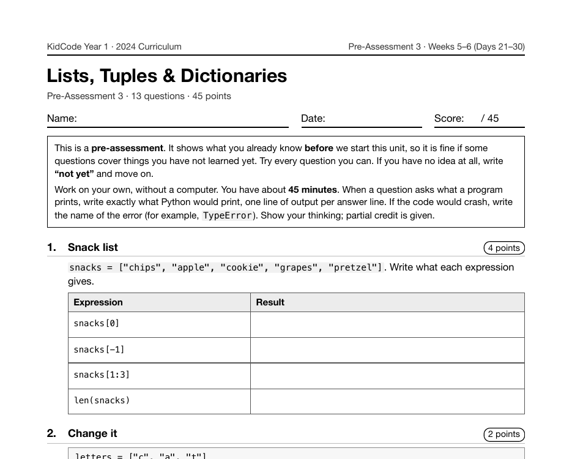

Project 5: Trivia Quiz Show
Trivia Quiz Show is Project 5, on Day 30 of Year 1, at the end of the week on dictionaries. Questions and answers are stored as a list of dictionaries, answers are cleaned up with .lower() and .strip(), and the score prints at the end.
What I taught that week
From the Year 1 curriculum, Week 6: Dictionaries & Data
Day 26: Dictionaries: Key-Value Pairs. Creating dictionaries with {}, looking up values by key, and adding, changing, and deleting entries. Checking keys with in, and why KeyError appears. Practice: "Pet Profile".
Day 27: Looping Through Dictionaries. Using .keys(), .values(), .items(), and .get() with default values. Counting with dictionaries and choosing between a list and a dictionary.
Day 28: Lab: Word Counter. Using .split(), loops, and a dictionary to count how often each word appears in a sentence, then finding the most common word. A first taste of text analysis.
Day 29: Lists of Dictionaries. Storing many records, such as students or trivia questions, as a list of dictionaries. Looping through records and reading fields by key. Practice: "Class Directory".
Day 30: Lab: Trivia Quiz Show. Project 5. Questions and answers stored in a list of dictionaries, with score keeping. Accepting messy answers with .lower() and .strip(), and printing the score with an f-string.
What students built
24 students built a quiz. Every one stores its questions as a list of dictionaries and normalizes answers with both .lower() and .strip(), so "Lion " and "lion" count as the same answer. 29% added a lives system that ends the game early. The median program is 29 lines.
One student's program
This is one real submission, shown as the student wrote it apart from the removed name header. It was chosen by a fixed rule rather than for being the best: it is the submission closest to the project's median length among those that ran cleanly and contain nothing that could identify anyone.
questions = [
{"question": "What kind of animal is Simba in The Lion King?", "answer": "lion"},
{"question": "What is the name of the toy cowboy in Toy Story?", "answer": "woody"},
{"question": "Which movie features a snowman named Olaf?", "answer": "frozen"},
{"question": "What color is the Hulk?", "answer": "green"},
{"question": "What is the name of Mickey Mouse's dog?", "answer": "pluto"},
]
name = input("What is your name? ")
print(f"Welcome to Cartoon Corner, {name}! Host: Professor Pop")
print("You have 3 lives. Miss a question and you lose one.")
lives = 3
score = 0
number = 0
while number < len(questions) and lives > 0:
current = questions[number]
reply = input(f"Question {number + 1}: {current['question']} ")
reply = reply.strip().lower()
if reply == current["answer"]:
score += 1
print("Yes! Points for you.")
else:
lives -= 1
print(f"Oops! Answer: {current['answer']}. Lives left: {lives}")
number += 1
if lives == 0:
print("GAME OVER. You ran out of lives.")
else:
print("You survived the whole show!")
print(f"Final score: {score}/{len(questions)}")
A sample run of that program (the input was typed for this page)
What is your name? Player Welcome to Cartoon Corner, Player! Host: Professor Pop You have 3 lives. Miss a question and you lose one. Question 1: What kind of animal is Simba in The Lion King? lion Yes! Points for you. Question 2: What is the name of the toy cowboy in Toy Story? Woody Yes! Points for you. Question 3: Which movie features a snowman named Olaf? frozen Yes! Points for you. Question 4: What color is the Hulk? blue Oops! Answer: green. Lives left: 2 Question 5: What is the name of Mickey Mouse's dog? pluto Yes! Points for you. You survived the whole show! Final score: 4/5
The worksheet for this unit
Each unit has a pre- and post-assessment written from the same curriculum. This is the first page of the pre-assessment for the unit this project sits in: Lists, Tuples & Dictionaries (Weeks 5–6 (Days 21–30), 13 questions).

Where it fits
This project comes back in Year 2 as Trivia Quiz 2.0, where the questions move into a JSON file, high scores are saved, and bad input is caught with try/except. Putting the two versions side by side is the clearest single picture of what changed between Year 1 and Year 2.
Looking back
Tolerating messy answers is a small thing that makes a program feel real to the person using it. It's also the first time students write code for a user who isn't them.